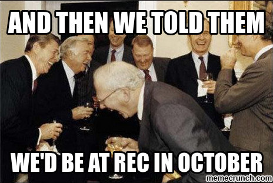

EPUB 3.1 Standard Update
Romain Deltour – DAISY
XML Prague 2016
What is EPUB?
A distribution and interchange format standard for digital publications and documents, developped by IDPF.
A (static) website in a ZIP
A brief history
- OEBPS
- OEBPS 1.1
- OEBPS 2.2
- EPUB begins
- EPUB 2.0
- EPUB 2.0.1
- EPUB 3
- EPUB 3.0.1
- EPUB 3.1
Focus on accessibility.
Convergence with the web.
Future: W3C Portable Web Publications?
@idpfmemes
The EPUB 3.1 revision
- Consolidation
- Simplification
- Alignment with the Web
- Accessibility
Agressive deadline: 2016!
Reorganization
One spec to rule them allhttp://www.idpf.org/epub/31/spec/epub-spec.html
- EPUB Open Container Format (OCF)
- EPUB Publications
- EPUB Content Documents (incl. Navigation Document)
- EPUB Media Overlays
- EPUB Specification
- EPUB Open Container Format (OCF)
- EPUB
PublicationPackage (incl. Navigation Document) - EPUB Content Documents
- EPUB Media Overlays
Some Changes
HTML Syntax
- Mandatory for Reading Systems
- Optional for Authors
Aria Role
https://www.w3.org/TR/dpub-aria-1.0/- Only option in HTML
- Supersedes
epub:type
Browser-Friendly Format
- Unzipped ("exploded") publication
- Alternative serialization of the package description
Metadata
dc:identifierdc:titledc:language+dc:type+dc:creator*dc:pubisher?
+
linked external records
Accessibility
- Conformance to WCAG 2.0
- Accessibility Profile
Maintenance
Maintenance
- CSS Profile cleanup
- Scripting clarification
- New Core Media Types
- Foreign resource fallbacks
Removals
- NCX
guidePackage elementbindingsPackage elementepub:*HTML elements
EPUB Needs You!
Please review
- First Editor's draft
http://www.idpf.org/epub/31/spec/epub-spec.html - EPUB 3.1 Changes
http://www.idpf.org/epub/31/spec/epub-changes.html
How to provide feedback?
- GitHub issue trackerhttps://github.com/IDPF/epub-revision/issues
- Mailing listepub-working-group@googlegroups.com
- Ask the chairs
| Markus Gylling mgylling@idpf.org | Tzviya Siegman tsiegman@wiley.com |
EPUB Summit in Bordeaux
http://edrlab.org/edrlab/epub-summit/
April 7-8, 2016.
An IDPF / Readium / EDRLab event.
Questions?
@rdeltour